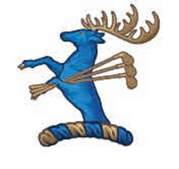
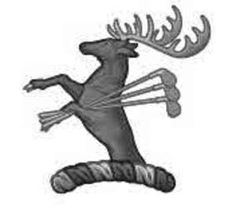

Trade Mark Journal No.2025/048 28 November 2025
UK00004297061 19 November 2025 (3,14,16,18,21,24,25,28,32,33,36,39,41,43,44,45)
Mark 1

Mark 2

- Class 3
- Toiletries; soaps; perfumery; after shave; personal fragrance; cologne; eau de parfum; essential oils; cosmetics; hair lotions; dentifrices; eau de toilette; body sprays; skin and body lotions; shaving gel; shaving foam; shaving cream; shaving soap; talcum powder; deodorants; anti-perspirants; non-medicated mouthwashes; beauty care preparations; personal hygiene products; skin creams; shampoo and conditioner; wet wipes; bath preparations; body washes; skin cleansers and moisturisers; shower gel; bubble bath; bath oil; essential oils; incense; preparation for fragrancing the air; reed diffusers; hand wash; hand cream; lip balm; scented linen spray; scented pillow spray; scented room spray.
- Class 14
- Jewellery; watches; clocks; keyrings and fobs; horological and chronometric instruments; jewellery boxes; tie pins; cuff links; charms and brooches; trophies made of precious metal; badges of precious metal.
- Class 16
- Printed matter; travel guides; calendars; diaries; writing implements; stationery; carrier bags; paper napkins; photographs; pens; pencils; bookmarks; books; notelets; journals; brochures; magazines; stickers and sticker albums; transfers; drawing materials; paint boxes and painting sets; pencil cases; invitations; greeting cards; wrapping paper; gift bags made of paper and gift boxes; posters; postcards; writing paper; picture books; paper tablecloths; paper tickets; maps; passport covers.
- Class 18
- Leather and imitations of leather, animal skins and hides, sporrans; trunks and travelling bags; umbrellas and parasols; golf umbrellas; luggage tags; walking sticks; bags and holdalls; backpacks; handbags; shopping bags; rucksacks; satchels; wash bags; toilet bags; shoulder bags; sports bags; shoe bags; suitcases; wallets and purses; cosmetic bags; vanity cases (not fitted); key holders; travel cases and luggage; belts; key holders; travel garment covers’; dog collars; horse harnesses, rugs, blankets and saddles; saddlery, whips and apparel for animals; riding saddles, whips and crops; leather scorecard holders for golf; leather yardage book covers for golf; leather golf bag tags; hunting crops; game bags (hunting accessories).
- Class 21
- Articles of glassware; drinking glasses; whisky glasses; glass decanters; glass bottles; crystal glassware; glass bottle stoppers; whisky stones; hip flasks; funnels for filling hip flasks; plastic water bottles; drinking bottles; glass stoppers; bowls, tumblers, mugs; cups; glasses; tea pots; decorative cups and quaiches; ice buckets; ornaments (not of precious metal); earthenware; stoneware; porcelain; bone china; pottery; figurines, ornaments, sculptures, statues and models made of ceramics, earthenware, stoneware, china, porcelain, or terra-cotta; tableware; household or kitchen utensils and containers (none of precious metal or coated therewith); dishes; plates; bowls; vases; soap dishes; brushes; clothes brushes; shaving brushes; holders for shaving brushes; ironing board covers; kitchenware; kitchen storage containers; oven gloves; piggy banks of earthenware, ceramic, pottery or china; pet feeding bowls and dishes; candlesticks; picnic baskets (fitted); gardening gloves; ice buckets.
- Class 24
- Textiles and textile goods; towels and tea towels; bar towels; tartan piece goods; tartan bolting cloth; tartan travelling rugs; bed covers and bed linen; napkins; tablecloths; table runners; pillowcases; duvet covers; bedspreads; quilts; throws; blankets; cushion covers; textile place mats; travelling rugs; curtains; textile wall hangings; travelling rugs textile handkerchiefs.
- Class 25
- Tartan kilts, cardigans; clothing, headgear and footwear; hats; sweaters; sweatshirts; hooded tops; t-shirts; polo shirts; ties; jerseys; blazers; jackets; jerseys; scarves; hats; gloves; socks; belts; pyjamas; dressing gowns; bath robes; slippers; nighties; aprons; gilets; articles of outerwear; coats; vests; slippers; underwear; boxer shorts; golf clothing and shoes; shorts; tracksuits; waterproof clothing; fishing waders; fishing clothing and footwear; waterproof boots for fishing; hunting jackets and shirts; hunting boots; riding boots and gloves; jodhpurs and horse riding pants; sportswear; body warmers; swimwear.
- Class 28
- Sporting articles and equipment; golf equipment; bags adapted for carrying sporting articles; golf bags; golf balls; golf tees; golf club covers; golf ball markers; golf gloves; golf mats; golf clubs; golf drivers, putters and irons; golf practice nets; divot repair tools; golf training aids; golf bag carts and trolleys; golf bag stands; fishing rods, reels and tackle; hunting and fishing equipment; bags for fishing, fishing tackle bags and fishing rod holders; fishing bait; archery targets and equipment; sports bows; lures and decoys for hunting; toys, games and playthings; soft toys; jigsaws; playing cards, gymnastic and sporting articles; decorations for Christmas trees.
- Class 32
- Non-alcoholic beverages; spring water; still and sparkling water; mineral water; non-alcoholic beverages made from spring or mineral water.
- Class 33
- Alcoholic beverages; whisky; malt whisky; scotch whisky; whisky based liqueurs; gin; vodka; distilled spirits; insofar as whisky and whisky based beverages, complying with the specifications of the PGI Scotch whisky.
- Class 36
- Financial services; financial sponsorship and patronage; financial sponsorship of cultural and sporting events; project financing; provision of loans; financial investment services; real estate services; real estate investment; leasing and rental of real estate; real estate management; property management services; time share management services; administration of financial affairs relating to real estate; arrangement of shared ownership of real estate; real estate equity sharing; real estate trustee services; issuing tokens of value in the nature of gift vouchers; insurance services.
- Class 39
- Organisation of tours and sightseeing tours; sightseeing and excursion services; tourist guide services; travel services; chartering of boats, bonded warehousing and storage services; transportation of passengers, passenger vehicles and passengers luggage; luggage storage services; vehicle parking services; escorting of travellers; ticket booking and seat reservation services; travel information services; travel arrangement; travel reservation; vehicle rental and charter; provision of computerised travel information; chartering of boats, yachts, aircraft and airplanes; harbouring and storage services for boats and yachts; boat and yacht rental; transport by helicopter and private jet.
- Class 41
- Entertainment; sporting services; club services; organisation of sporting events and activities; provision of sporting, fitness and exercise facilities, activities and amenities; provision of training and education relating to health, fitness and nutrition; provision of golf courses and golfing facilities; golf tuition, training and coaching; golf performance coaching; rental of golf club facilities and golf apparatus; golf driving range services; organising of competitions, lotteries and raffles; sport and fitness training and coaching; organising of golf tournaments and competitions; arranging national amateur and professional golf tournaments; golf academy services; ticket reservation services; golf caddie services; hunting and fishing instruction; arranging parties for fishing and hunting; organising and conducting fishing competitions; arranging parties for deer stalking; hunting guide services; provision of fishing facilities; horse riding schools and horse riding instruction; recreational services relating to horse riding; provision of horse riding facilities; horse showing and jumping events; arranging parties for game shooting; providing facilities for clay pigeon shooting; providing facilities and services for swimming pools and water sports; fitness club services; party, ball, wedding and event planning (entertainment) and organisation; entertainment services provided by hotels; arranging, organising and conducting of award ceremonies; entertainment and sporting information services provided via the Internet and other computer and communications networks; entertainment services featuring electronic media, multimedia content, videos, images, text, photos, user-generated content, audio content, and related information via the Internet and other communications networks; digital video, audio and multimedia entertainment publishing services; entertainment; education in the fields of history, culture and heritage; film production; production of audio, video and audio/video recordings; arranging and conducting of workshops, training courses, conferences, seminars, lectures, congresses, symposiums and colloquiums; organising meetings, social events, dinners and public speaking events; arranging and hosting festivals relating to heritage, culture and history; organising and arranging entertainment, heritage and cultural activities; arranging and conducting of entertainment events, festivals, arts and cultural events; publication of magazines, books, texts and printed matter; publishing services; electronic publishing services; book publishing services; publication of printed matter and printed publications, books, newspapers and magazines; hospitality services; corporate hospitality; consultancy, information and advisory services relating to all of the aforesaid services.
- Class 43
- Hotel and resort services; temporary accommodation; provision of caravan and campground facilities; catering services; travel agency services for booking accommodation; holiday planning services; provision and reservation of accommodation; services for providing food and drink; restaurant, bar, pub, cafe, canteen, coffee shop, snack bar, and wine bar services; food and drink preparation; organisation of, and provision of facilities for, conferences, conventions, trade fares, weddings, parties and events; rental of holiday lodgings; banqueting services; cocktail lounge services.
- Class 44
- Spa and health spa services; beauty spa and beauty salon services; hairdressing services; provision of spa facilities; provision of beauty therapy treatments; health resort services (medical); information and advisory services relating to health care; diet services; spa reservation services; farming services; agriculture services.
- Class 45
- Security services; security monitoring services; security guard services for the protection of property and buildings; nanny services; chaperoning services; wedding ceremony planning and arranging; providing wedding officiant services; conducting civil and religious marriage services; concierge services; hotel concierge services; bodyguard services.
The River Tay Castle LLP
Representative: Lincoln IP